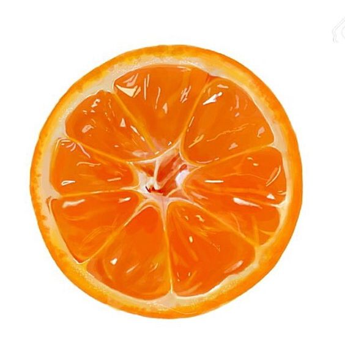
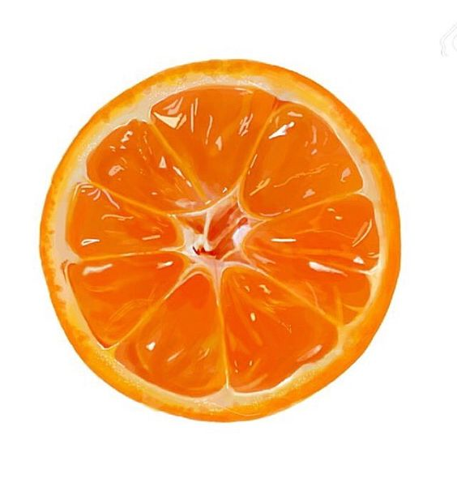

이미지 그림파일 확장자 설명
GIF : 표시할 수 있는 색상 수가 최대 256가지이지만 다른 이미지 파일 형식에 비해 크기가 작다,
아이콘,불릿 등 작은 이미지에 주로 사용 투명한 배경이나 움직이는 이미지를 만들 수 있다
JPG / JPEG : 사진을 위해 개발된 형식 다양한 색상,명암표현
저장을 반복하다보면 화질이 떨어진다.
PNG : 투명 배경을 만들 수 잇고 다양한 색상 표현
네트워크용으로 거ㅐ발되어 최근 많이 사용
 
